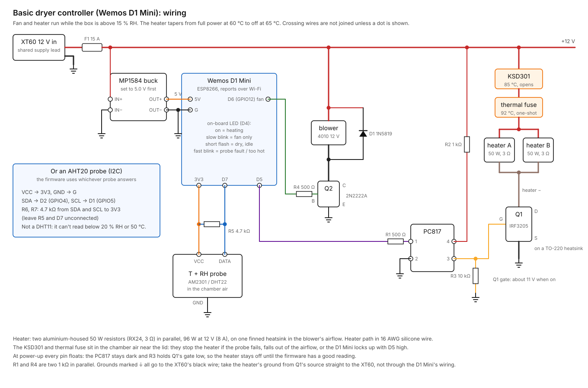

The cheapest box that keeps a reel dry: a single-reel housing, a 96 W heater and an off-the-shelf STC-3028 humidity + temperature controller. No microcontroller, no firmware, no scale, no Wi-Fi. The heater runs only while the box is too humid and below a temperature cap, and a W1209 thermostat drops half the heater for the last 5 °C so it doesn't overshoot.
| 1-roll (smart) | Dumb | |
|---|---|---|
| Parts per box | about US$174 | about US${{BOM_PER_BOX}} |
| Controller | ESP32-C3 board and firmware | STC-3028 + W1209, set with buttons |
| Temperature control | PID, about ±0.5 °C | Two-step on/off, about ±2 °C |
| Energy | About the same: the insulation decides how much heat is lost. The dumb box can use less, because it only heats while the air is humid instead of running timed cycles. | |
| Drying | Timed cycles per material, vent pulses | Holds a humidity target; desiccant and a passive vent carry the moisture away |
| Weight, filament left, runout, motion | Yes | No |
| Dashboard, alerts | Yes | No: the STC-3028's display shows temperature and humidity on the front |
| Overheat protection | Firmware cut-outs + KSD301 + thermal fuse | KSD301 + thermal fuse |
The STC-3028 has one probe (temperature and humidity, on a cable) and two relays. Their contacts are wired in series in front of the heater:
| Box is… | Humidity relay (dehumidify) | Temperature relay (heat) | Blower | Heater |
|---|---|---|---|---|
| Dry enough | open | (either) | off | off |
| Humid, well under the cap | closed | closed | on | 96 W (both halves) |
| Humid, within 5 °C of the cap | closed | closed | on | 48 W (the W1209 drops half B) |
| Humid, at the cap | closed | open | on | off |
Relative humidity falls as air warms, so the humidity setpoint decides how hard the box works. With a low setpoint (about 10 %) the heater holds near the temperature cap until the air is really dry: that's drying. With a higher one (about 25 %) the heater only warms the box a little when it gets damp: that's storage. The desiccant does most of the work in storage; the small passive vent in the lid lets moisture out while drying.

Instead of the STC-3028 and W1209, a Wemos D1 Mini (ESP8266, Rs 830 at Tronic) with one temperature + humidity probe can run the same box. Fan and heater run while the air is above 15 % RH and stop at 15 %. The heater tapers smoothly from full power at 60 °C to off at 65 °C instead of switching in two steps. It reports temperature, humidity, heater and fan over Wi-Fi with the same API as the smart dryer (for the Printer Control Center), and has a small status page of its own; the heater control runs on the board, with or without Wi-Fi. The controller parts come to about Rs 2,800–3,800, all from Tronic, plus the same heater and safety parts.

Or an ESP-01S (Rs 490, plus a Rs 350 USB adapter once to flash it): the same firmware, with the heater on GPIO0 (active low), the fan on RX and the probe on GPIO2. It runs from 3.3 V and has no status LED. ESP-01S wiring.
Use an AM2301 (DHT21), DHT22 or AHT20 probe, not a DHT11: the DHT11 only reads 20–90 % RH and up to 50 °C, so it can't see the 15 % target or the 65 °C cap.
Menu names differ a little between STC-3028 batches; the steps below match the usual manual. Set the controller to heating for temperature and dehumidifying for humidity, both with no start-up delay.
| Use | STC-3028 temperature cap | STC-3028 humidity setpoint | W1209 setpoint |
|---|---|---|---|
| Dry PLA / PLA+ | 50 °C, difference 1 °C | 10 %, difference 3 % | 45 °C |
| Dry TPU | 55 °C | 10 % | 50 °C |
| Dry PETG | 65 °C | 10 % | 60 °C |
| Dry ABS / ASA / Nylon / PC | 70 °C | 10 % | 65 °C |
| Store any filament | 45 °C | 25 %, difference 5 % | 40 °C |
W1209: press SET and use +/− for the setpoint. Hold SET for the parameters: P0 = H (heating), P1 = 1.0 (hysteresis), P2 = 80 (upper limit), P3 = 0, P4 = 0 (offset), P5 = 0 (no delay), P6 = OFF (no alarm). Check the STC-3028's probe range on its label or manual: the common ones read to 80 °C, enough for a 70 °C cap.
The 1-roll housing without the electronics bay's scale: one reel on an 8 mm axle, a heater duct with the blower and the heatsink, a desiccant cassette, and a lid on a printed hinge.
About US${{BOM_PER_BOX}} per box. Search terms are for AliExpress unless marked Tronic. Also available as bom.csv.
{{BOM_TABLES}}